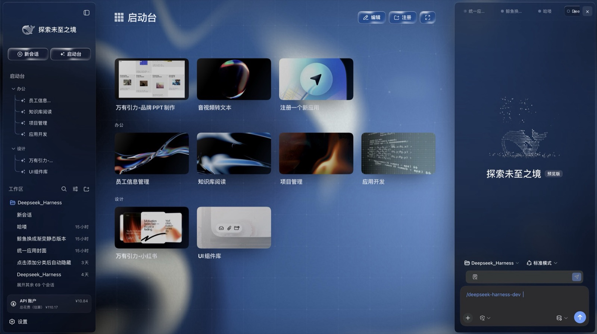

Glass three columns
Brand rail, left sidebar and right sidebar all sit on the same glass tokens: translucent gradient, backdrop blur, hairline edge. The left folds to an icon rail, the right folds away entirely.
ui-layout · ui-sidebar · ui-sidebar-right